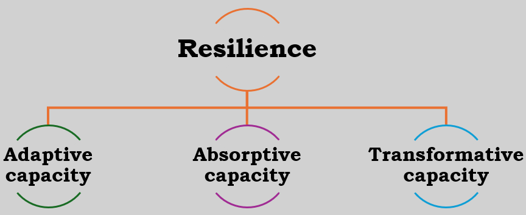
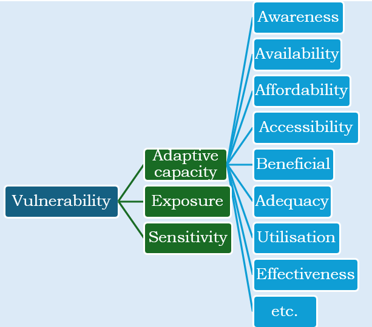

In today’s complex and dynamic world, understanding the stability and fragility of systems and users is crucial for ensuring resilience and mitigating potential risks. Resilience capacity and vulnerability index are important in measuring the ability of systems and users to withstand and recover from disruptions.
Resilience capacity refers to the ability of systems and users to absorb and adapt to disturbances, maintaining their functionality and performance. Resilience capacity has three components, i.e.,
Adaptive capacity: The ability to adapt to changing conditions
Absorptive capacity: The ability to absorb shocks and disruptions
Transformative capacity: The ability to recover from disruptions

A vulnerability index is a quantitative measure of the susceptibility of systems and users to disruptions and shocks. It also has three components, i.e.,
Adaptive capacity: The ability to adapt to changing conditions. This is aggregated from different indicators such as Awareness, Availability, Affordability, Accessibility, Beneficial, Adequacy, Utilization, Effectiveness, etc. The various indicators are measured using likert-type responses of the systems or by the users.
Exposure: The likelihood of being affected by disruptions
Sensitivity: The degree to which systems and users are affected by disruptions

It can be noted that Adaptive Capacity is a component of both resilience and vulnerability. However, the adaptive capacity from vulnerability is knowledge-based and it is obtained by individually converting the Likert scores to indices for each indicator and aggregated. That of resilience capacity is based both financial and human capital as well as strong social and institutional networks. Dyn4cast package is able to estimate both.
Resilience capacity is one of the objects created when the function model_factors in the package Dyn4cast is implemented. The basic usage is:
model_factors(data, DATA)
where:
data is an R object obtained from exploratory factor analysis (EFA) using the fa function in psych package.
DATA is a data.frame, the raw data used to carry out the parallel analysis to obtain data object.
library(Dyn4cast)
library(tidyverse)
library(psych)
library(readr)
Data <- Quicksummary
GGn <- names(Data)
GG <- ncol(Data)
GGx <- c(paste0("x0", 1:9), paste("x", 10:ncol(Data), sep = ""))
names(Data) <- GGx
lll <- fa.parallel(Data, fm = "minres", fa = "fa", main = "", plot = FALSE)Parallel analysis suggests that the number of factors = 5 and the number of components = NA dat <- fa(Data, nfactors = lll[["nfact"]], rotate = "varimax", fm = "minres")
fff <- model_factors(data = dat, DATA = Data)
Loadings:
MR1 MR2 MR3 MR5 MR4
x11 0.513 0.053 0.124 0.217 0.137
x12 0.611 0.127 -0.090 0.075 0.134
x13 0.559 0.354 0.115 0.020 -0.172
x20 0.556 0.049 0.083 0.306 0.059
x24 0.617 -0.284 -0.168 0.056 0.527
x25 0.718 -0.169 0.063 0.065 0.196
x26 0.595 0.048 0.104 0.205 0.139
x01 0.124 0.625 -0.077 -0.066 0.066
x02 0.039 0.783 -0.012 0.206 0.541
x10 0.254 0.631 -0.139 0.255 -0.081
x28 -0.086 -0.610 0.092 0.320 0.111
x04 0.239 -0.176 0.740 -0.101 -0.039
x05 0.149 0.065 0.792 0.074 -0.015
x06 -0.043 -0.260 0.720 0.157 0.186
x08 -0.130 0.016 0.594 0.255 0.452
x17 0.142 -0.192 0.044 0.667 0.137
x18 0.263 0.161 -0.041 0.527 0.073
x19 0.290 0.066 0.069 0.592 0.134
x03 0.087 -0.015 0.309 0.286 0.523
x07 0.302 -0.031 0.240 0.417 0.090
x09 0.112 -0.301 0.305 0.403 0.154
x14 0.345 0.153 0.203 0.203 -0.080
x15 0.480 0.275 0.262 0.069 -0.181
x16 0.125 -0.299 0.346 0.374 0.291
x21 0.492 -0.037 0.064 0.344 -0.065
x22 0.303 -0.238 0.039 0.286 0.481
x23 0.360 -0.440 0.021 0.207 0.499
x27 0.092 0.056 0.465
x29 0.216 -0.392 0.355 0.070 0.262
MR1 MR2 MR3 MR5 MR4
SS loadings 3.854 2.895 2.786 2.441 2.203
Proportion Var 0.133 0.100 0.096 0.084 0.076
Cumulative Var 0.133 0.233 0.329 0.413 0.489fff$`Resilence capacity` [1] 0.4138058 0.4073301 0.4229417 0.4138058 0.4080583 0.4138058 0.3778932
[8] 0.4080583 0.4080583 0.3778932 0.2800000 0.2756602 0.1845049 0.1935728
[15] 0.2281068 0.3467670 0.2499320 0.1235825 0.1773592 0.3081942 0.5928932
[22] 0.6099806 0.5794660 0.3757184 0.4055922 0.3190000 0.4962621 0.3938835
[29] 0.6016505 0.4309320 0.6195825 0.6173786 0.4440097 0.4552136 0.4698058
[36] 0.4340485 0.4340485 0.4356408 0.4162427 0.4554563 0.4340485 0.4469029
[43] 0.3315340 0.3315340 0.3549806 0.3263495 0.2923495 0.3315340 0.3410680
[50] 0.3565631 0.3237087 0.3334175 0.3236699 0.3928447 0.3281553 0.3467864
[57] 0.2902913 0.3518252 0.3831553 0.3401165 0.4332330 0.4296408 0.3903495
[64] 0.4599320 0.4698155 0.4607670 0.4324078 0.3505631 0.3170097 0.4611845
[71] 0.5380485 0.4301942 0.3634369 0.3403301 0.3403301 0.3450971 0.3496505
[78] 0.4631262 0.3787379 0.4186311 0.4294369 0.4493495 0.2904563 0.4440680
[85] 0.3550583 0.3752233 0.2861068 0.3516796 0.4556019 0.3662816 0.3691748
[92] 0.3324951 0.3104369 0.3718641 0.4230680 0.3267670 0.3565922 0.3718641
[99] 0.3566019 0.3205049 0.2711748 0.2801456 0.3088544To obtain Resilience capacity, the function is run for each component.
To do this, the relative_likert function in Dyn4cast package is implemented. The basic usage is:
relative_likert(data, Likert = NULL, Ranks = NULL, Option = “text”)
where:
data Data frame of likert data either in text or scores.
Likert Vector of likert-type factors in descending order as in the data frame which must be given if the data frame is in text.
Ranks Optional vector of number of levels which is required if the data frame is in scores rather than text. There are only four choices i.e. 3, 5, 7, 9.
Option Optional vector indicating whether the data frame is in text or scores format. Defaults to text if not given for text data frame.
library(readr)
garrett_data <- data.frame(garrett_data)
rrr <- relative_likert(garrett_data, Ranks = 9, Option = "sccore")Preliminary check success, proceeding...
Likert lenght check success, proceeding...
Success, DONE! rrr$lik_col [1] 0.4222222 0.2962963 0.1555556 0.4888889 0.4666667 0.2592593 0.2740741
[8] 0.3481481 0.3111111 0.4814815 0.4518519 0.3037037 0.2592593 0.1333333
[15] 0.1333333 0.3259259 0.5259259 0.4370370 0.4148148 0.3703704 0.2444444
[22] 0.3925926 0.3407407 0.2962963 0.3259259 0.3407407 0.4666667 0.5333333
[29] 0.1185185data_l <- garrett_data %>%
pivot_longer(cols = everything()) %>%
mutate(value = case_when(value == 5 ~ "Serious constraint",
value == 4 ~ "Constraint",
value == 3 ~ "Not certain it is a constraint",
value == 2 ~ "Not a constraint",
value == 1 ~ "Not a serious constraint",
.default = "None"
)) %>%
group_by(name) %>%
mutate(row = row_number()) %>%
pivot_wider(names_from = name, values_from = value) %>%
select(-row) %>%
unnest(cols = everything())
ranking <- c(
"Serious constraint", "Constraint",
"Not certain it is a constraint", "Not a constraint",
"Not a serious constraint"
)
ddd <- relative_likert(data_l, Likert = ranking)Preliminary check success, proceeding...
Likert lenght check success, proceeding...
Success, DONE! ddd$lik_col [1] 0.2533333 0.3333333 0.4800000 0.4000000 0.3866667 0.4133333 0.5200000
[8] 0.3333333 0.5600000 0.3733333 0.3600000 0.2666667 0.5200000 0.4800000
[15] 0.4000000 0.4533333 0.2666667 0.4400000 0.2933333 0.4000000 0.4400000
[22] 0.4533333 0.3866667 0.4666667 0.3866667 0.2933333 0.4000000 0.2666667
[29] 0.2666667This is possiblle from the function index_construction from the package Dyn4cast and usage is:
index_construction(data)
where:
data Data frame of indicators of Exposure or Sensitivity. The data frame must be numeric.
library(readr)
garrett_data <- data.frame(garrett_data)
iii <- index_construction(garrett_data)iii$Index [1] 0.015228299 0.027141357 0.043161967 0.023704614 0.024090680 0.007265745
[7] 0.007079836 0.011221274 0.024803795 0.015805449 0.023704614 0.018301110
[13] 0.027079913 0.014345581 0.011664010 0.018737644 0.033529409 0.036788129
[19] 0.037230865 0.024803795 0.014345581 0.023328021 0.014159671 0.034162829
[25] 0.010644124 0.025566855 0.014159671 0.030970359 0.044750683cite this article as:
Nmadu J (2025).Stability and Fragility: Assessing Resilience Capacity and Vulnerability Index in Systems and Users. https://www.jobnmadu.com/r-blog/2025-10-22-r-markdown/rcvi/.
To cite package 'Dyn4cast' in publications use:
Nmadu J (2025). _Dyn4cast: Dynamic Modeling and Machine Learning
Environment_. R package version 11.11.24,
<https://github.com/JobNmadu/Dyn4cast>.
A BibTeX entry for LaTeX users is
@Manual{,
title = {_Dyn4cast: Dynamic Modeling and Machine Learning Environment_},
author = {Job Nmadu},
year = {2025},
note = {R package version 11.11.24},
url = {https://github.com/JobNmadu/Dyn4cast},
}Welcome to Data Science and Machine Learning!